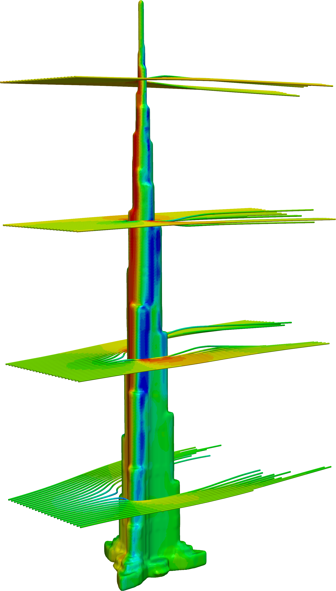
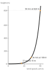
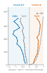
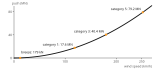

We solved the wind around the Burj Khalifa, the tallest building on Earth, from nine directions with the Navier–Stokes equations, to see where it pushes hardest and why.

The wind hits head-on. Highest pressure, in red.
Air speeds round the sides. Pressure drops (blue) and pulls on the walls.
Behind the tower the air slows and swirls: the wake.
u(z) ∝ ln((z + z₀) ÷ z₀)
a logarithm: fast high up, slow near the ground.

The front is pushed in, harder higher up, growing like (u ÷ U)² (dashed). The sides and back are sucked outward.


A category 5 hurricane pushes with 79.2 MN, about the weight of 8,000 tonnes. Turning effect at the base = force × distance: 23.7 GN·m ÷ 79.2 MN = 299 m up the tower.
A steady wind, so the time term drops out. Size of each term near the tower:
m/s² per kilogram of air. Pressure and inertia balance; friction is ten times smaller.
Category 5 push from all nine directions: 74.9 to 79.2 MN. The Y-shaped floor plan spreads it evenly.
Make cities inclusive, safe, resilient and sustainable. Knowing the wind’s push lets engineers build towers that stay safe in storms without more steel and concrete than they need.